Introduction to linear models
Today
We will learn how linear models can be used to describe relationships between variables.
- what a linear model represents
- how model coefficients are estimated and interpreted
- how to assess whether a linear model adequately describes the data
Later in the course
- common study designs with GLMs
- linear models in the ML context
Why linear models?
With linear models we can answer questions such as:
- Is there a relationship between outcome and predictor, e.g. weight and height?
- How strong is that relationship?
- How does the expected outcome change when the predictor changes?
Statistical vs. deterministic relationship
Relationships in probability and statistics can generally be one of three things:
- deterministic
- random
- statistical
Statistical vs. deterministic relationship
deterministic
A deterministic relationship involves an exact relationship between two variables, for instance Fahrenheit and Celsius degrees is defined by an equation \(Fahrenheit=\frac{9}{5}\cdot Celcius+32\)
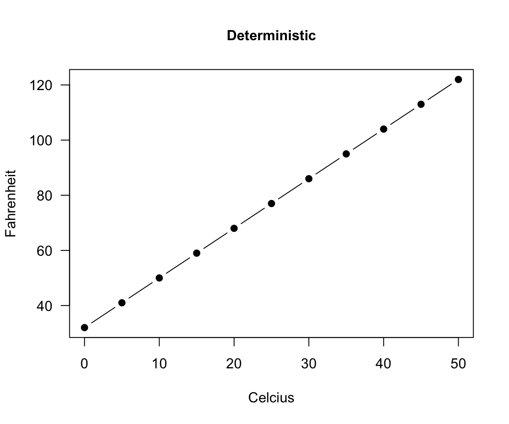
Statistical vs. deterministic relationship
random
There is no relationship between variables in the random relationship, e.g. number of plants Olga buys and time of the year as Olga buys plants whenever she feels like it throughout the entire year
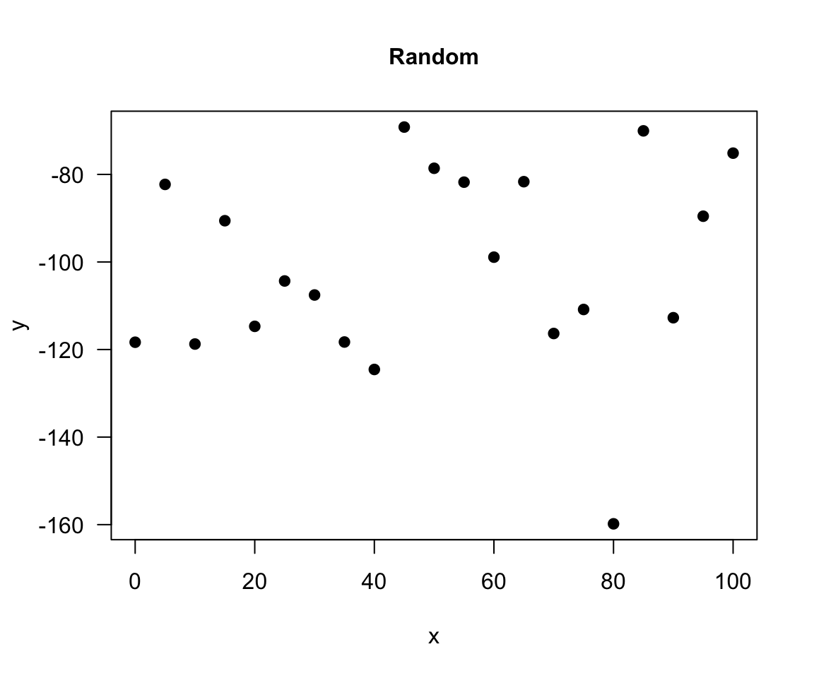
Statistical vs. deterministic relationship
statistical relationship = deterministic + random
A statistical relationship is a mixture of deterministic and random relationship, e.g. the savings that Olga has left in the bank account depend on Olga’s monthly salary income (deterministic part) and the money spent on buying plants (random part)
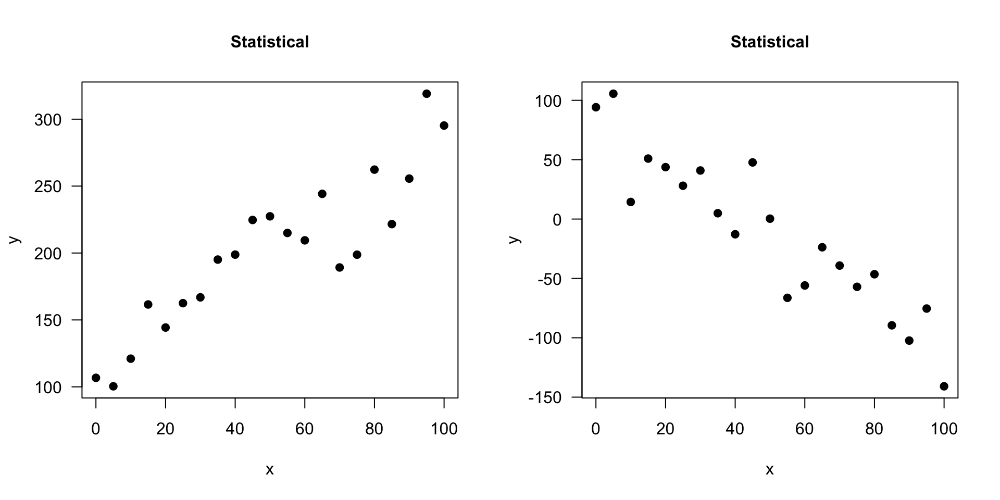
What linear models are
definition
A linear model describes a continuous outcome \(Y\) using one or more predictors \(X\).
For example, \[ Y_i = \beta_0 + \beta_1x_{1i} + \dots + \beta_px_{pi} + \epsilon_i \]
where:
\(Y_i\) is the observed outcome for individual \(i\)
\(x_{1i},\dots,x_{pi}\) are predictor values
\(\beta_0,\dots,\beta_p\) are unknown model parameters describing how the expected outcome depends on the predictors (systematic part)
\(\epsilon_i\) represents variation not explained by the systematic part of the model
Predictors can be numerical, categorical, or a mixture of both.
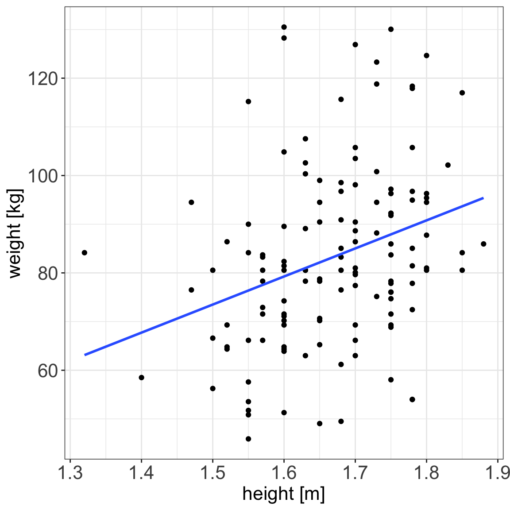
What does “linear” mean?
A linear model is linear in its model parameters.
For example:
\[ Y_i = \beta_0 + \beta_1X_i + \epsilon_i \]
is a linear model.
But so is:
\[ Y_i = \beta_0 + \beta_1X_i + \beta_2X_i^2 + \epsilon_i \]
because the parameters \(\beta_0\), \(\beta_1\) and \(\beta_2\) still enter the model linearly.
Linear model does not necessarily mean a straight-line relationship between \(X\) and \(Y\).
Simple linear regression
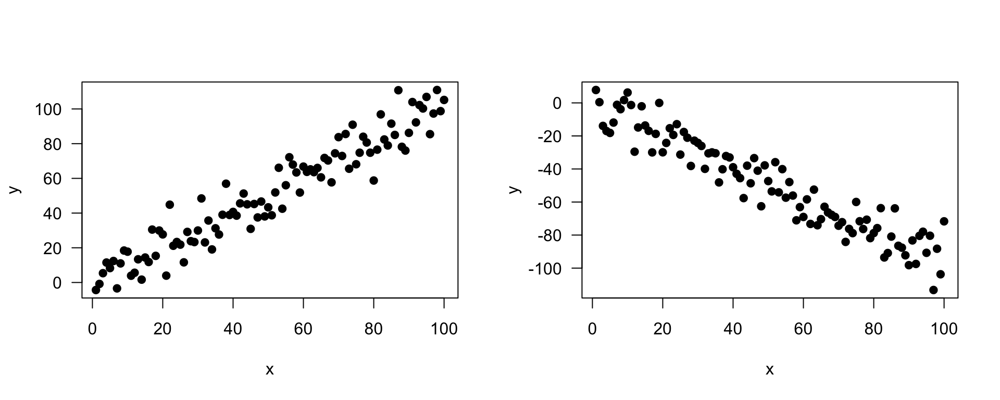
- Simple linear regression describes the relationship between the numerical outcome and one numerical explanatory variable
- We represent the systematic part of this relationship using a straight line.
- In practice, we estimate the straight line that best describes how the outcome changes with the predictor.
Simple linear regression
Example 1 (Weight and plasma volume) Let’s look at the example data containing body weight (kg) and plasma volume (liters) for eight healthy men to see what the best-fitting straight line is.
Simple linear regression
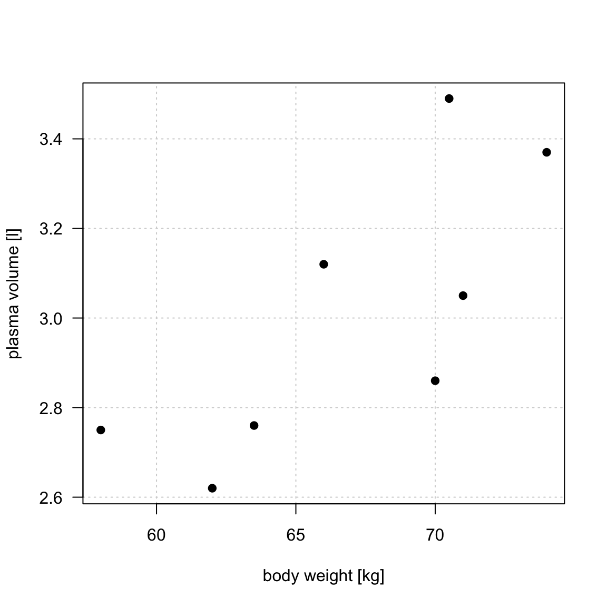
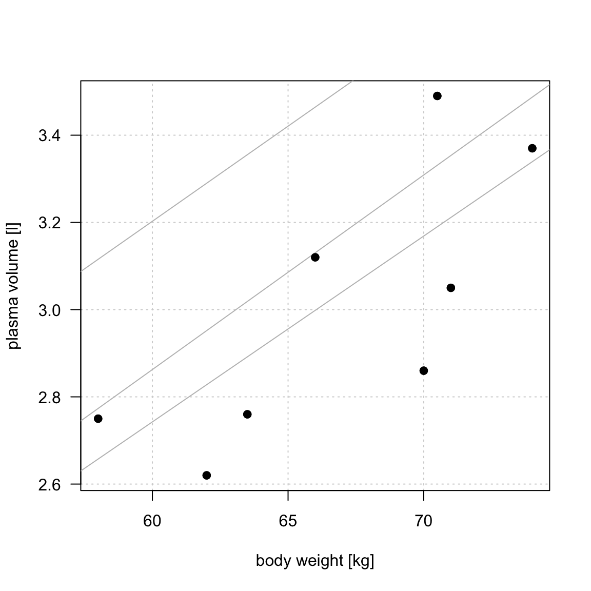
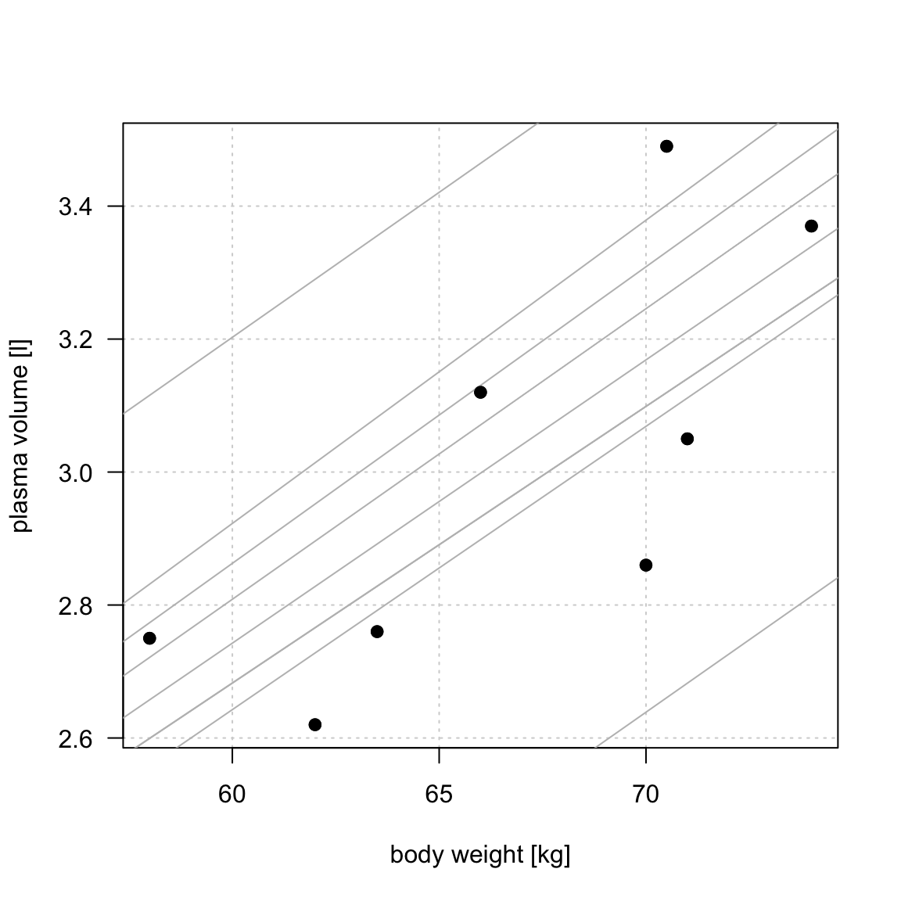
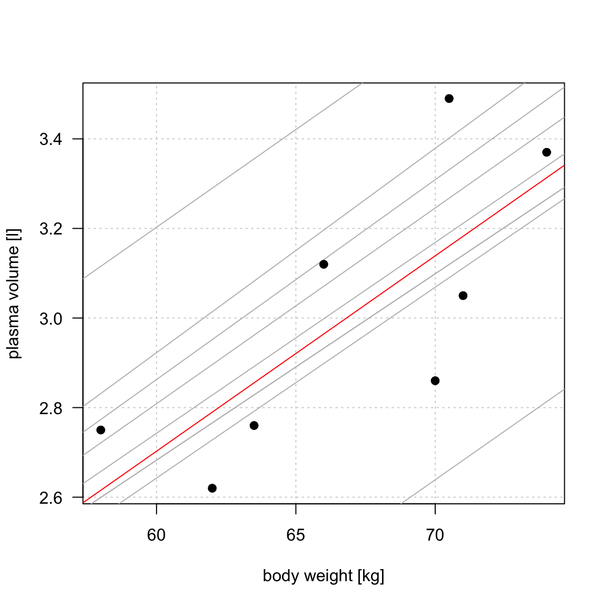
Simple linear regression
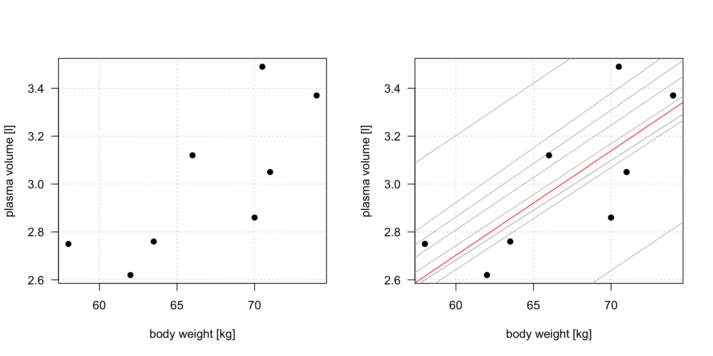
Figure 1: Scatter plot of the data shows that high plasma volume tends to be associated with high weight and vice verca. Linear regression gives the equation of the straight line (red) that best describes how the outcome changes (increase or decreases) with a change of exposure variable
The equation for the red line is: \[\hat{y}_i=0.086 + 0.044 \cdot x_i \quad for \;i = 1 \dots 8\]
and in general: \[\hat{y}_i = \hat{\alpha} + \hat{\beta}x_i \quad for \; i = 1 \dots n \tag{1}\]
Simple linear regression
In other words, by finding the best-fitting straight line we are building a statistical model to represent the relationship between plasma volume (\(Y\)) and explanatory body weight variable (\(x\))
Simple linear regression
- For an individual with body weight 58 kg, the fitted value from our model is.
\[\hat{y}_i = 0.086 + 0.044 \cdot 58 = 2.638\]
- But the observed plasma volume is \[y_i = 2.75.\]
- The observation therefore does not lie exactly on the fitted line.
- The difference: \(e_i = y_i - \hat{y}_i\) is called the residual.
- The statistical model can be written as
\[ Y_i = \alpha + \beta x_i + \epsilon_i, \]
- where \(\epsilon_i\) represents variation of individual observations around the systematic relationship.
- \(x\): is called: exposure variable, explanatory variable, independent variable, predictor, covariate
- \(y\): is called: response, outcome, dependent variable
- \(\alpha\) and \(\beta\) are model coefficients
- and \(\epsilon_i\) is an error terms
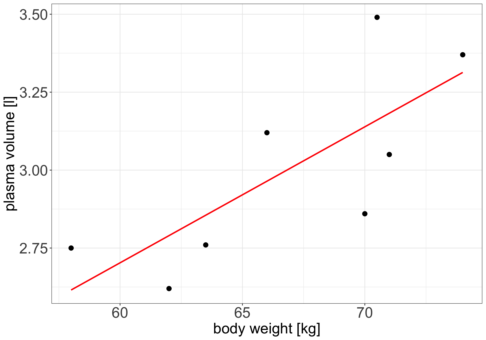
Least squares
- in the above “body weight - plasma volume” example, the values of \(\alpha\) and \(\beta\) have just appeared
- in practice, \(\alpha\) and \(\beta\) values are unknown and we use data to estimate these coefficients, noting the estimates with a hat, \(\hat{\alpha}\) and \(\hat{\beta}\)
- least squares is one of the methods of parameters estimation, i.e. finding \(\hat{\alpha}\) and \(\hat{\beta}\)
Least squares
minimizing RSS
Let
\[ \hat{y}_i=\hat{\alpha}+\hat{\beta}x_i \]
be the fitted value for observation \(i\).
- The residual is
\[ e_i = y_i-\hat{y}_i \]
- The residual sum of squares is
\[ RSS = \sum_{i=1}^n e_i^2 \]
- Least squares chooses \(\hat{\alpha}\) and \(\hat{\beta}\) to minimize RSS.
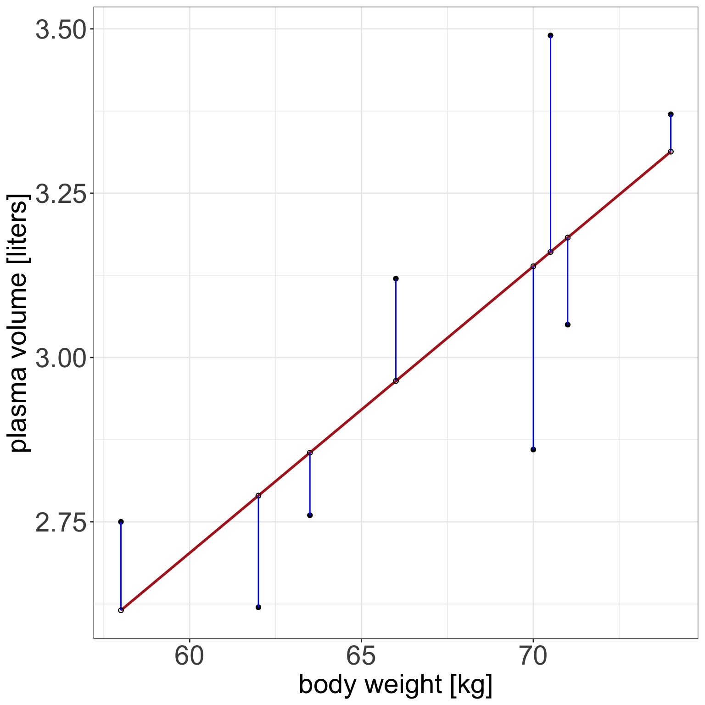
Another way to view the linear model
Expected-value interpretation
Another way to think about a linear regression model is that it describes the expected value of the outcome for a given value of the predictor.
\[ E(Y \mid X=x)=\alpha+\beta x \]
Individuals with the same value of the predictor can have different outcomes. The regression line describes their expected, or average, outcome.
The line describes their expected, or average, outcome.
The regression line describes how the expected outcome changes with the predictor, while individual observations vary around that expectation.
Slope
\(\widehat{plasma} = 0.0857 + 0.0436 \cdot weight\)
Linear regression estimates the model parameters \(\alpha\) and \(\beta\): \(Y_i = \alpha + \beta x_i + \epsilon_i\)
The slope \(\hat{\beta}=0.0436\) describes the expected change in plasma volume for a one-unit increase in body weight.
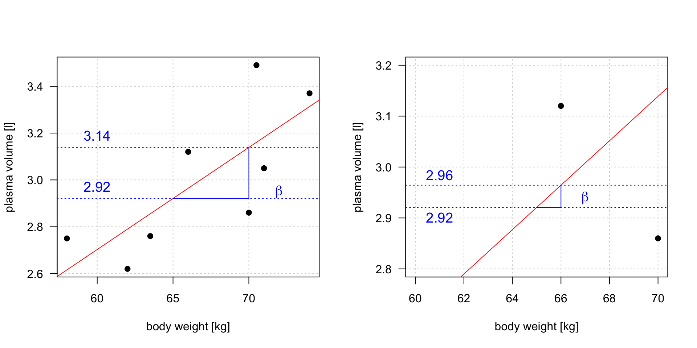
Increasing weight by 5 kg corresponds to \(3.14 - 2.92 = 0.22\) increase in plasma volume. Increasing weight by 1 kg corresponds \(2.96 - 2.92 = 0.04\) increase in plasma volume
Intercept
\(\widehat{plasma} = 0.0857 + 0.0436 \cdot weight\)
Linear regression estimates the model parameters \(\alpha\) and \(\beta\): \(Y_i = \alpha + \beta x_i + \epsilon_i\)
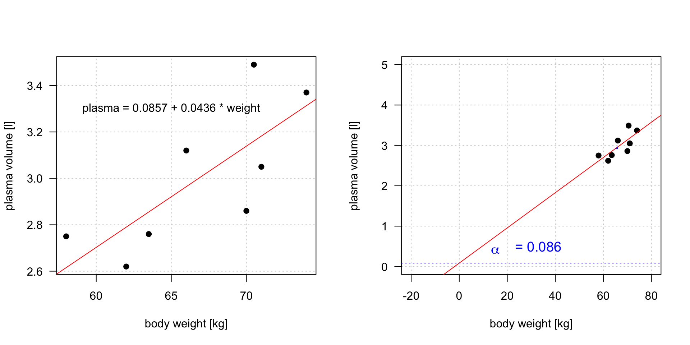
The intercept \(\hat{\alpha}=0.0857\) is the expected outcome when the predictor equals zero. It is not always meaningful
Hypothesis testing
Is there evidence of an association between the response and the predictor?
- \(\hat{\alpha}\) and \(\hat{\beta}\) are estimates of unknown population parameters and are therefore subject to sampling variation
- their precision is quantified by their standard errors
- we can use this uncertainty to test hypotheses about the model parameters
Hypothesis testing
The most common hypothesis test involves testing the null hypothesis of:
- \(H_0:\) There is no relationship between \(X\) and \(Y\)
- versus the
alternative hypothesis\(H_a:\) there is some relationship between \(X\) and \(Y\)
Mathematically, this corresponds to testing:
- \(H_0: \beta=0\)
- versus \(H_a: \beta\neq0\)
- since if \(\beta=0\) then the model \(Y_i=\alpha+\beta x_i + \epsilon_i\) reduces to \(Y_i=\alpha + \epsilon_i\)
Under the null hypothesis \(H_0: \beta = 0\) 
- \(n\) is number of observations
- \(p\) is number of model parameters
- \(\frac{\hat{\beta}-\beta}{e.s.e(\hat{\beta})}\) is the ratio of the departure of the estimated value of a parameter, \(\hat\beta\), from its hypothesized value, \(\beta\), to its standard error, called
t-statistic - the
t-statisticfollows Student’s t distribution with \(n-p\) degrees of freedom
Hypothesis testing
Example 2 (Hypothesis testing) Let’s look again at our example data and linear model fitted in R with lm() function.
Call:
lm(formula = plasma ~ weight)
Residuals:
Min 1Q Median 3Q Max
-0.27880 -0.14178 -0.01928 0.13986 0.32939
Coefficients:
Estimate Std. Error t value Pr(>|t|)
(Intercept) 0.08572 1.02400 0.084 0.9360
weight 0.04362 0.01527 2.857 0.0289 *
---
Signif. codes: 0 '***' 0.001 '**' 0.01 '*' 0.05 '.' 0.1 ' ' 1
Residual standard error: 0.2188 on 6 degrees of freedom
Multiple R-squared: 0.5763, Adjusted R-squared: 0.5057
F-statistic: 8.16 on 1 and 6 DF, p-value: 0.02893- Under
Estimatewe see estimates of our model coefficients, \(\hat{\alpha}\) (intercept) and \(\hat{\beta}\) (slope, here weight), followed by their estimated standard errors,Std. Errors
- If we were to test if there is an association between weight and plasma volume we would write under the null hypothesis \(H_0: \beta = 0\) \[\frac{\hat{\beta}-\beta}{e.s.e(\hat{\beta})} = \frac{0.04362-0}{0.01527} = 2.856582\]
- and we would compare
t-statistictoStudent's t distributionwith \(n-p = 8 - 2 = 6\) degrees of freedom (as we have 8 observations and two model parameters, \(\alpha\) and \(\beta\))
- we can use Student’s t distribution table or R code to obtain the associated P-value
[1] 0.02893095- here the observed t-statistics is large and therefore yields a small P-value, meaning that there is sufficient evidence to reject null hypothesis in favor of the alternative and conclude that there is a significant association between weight and plasma volume
Vector-matrix notations
Let’s rewrite our simple linear regression model \(Y_i = \alpha + \beta x_i + \epsilon_i \quad i=1,\dots n\) into vector-matrix notation in 6 steps.
Step 1. We rename our \(\alpha\) to \(\beta_0\) and \(\beta\) to \(\beta_1\).
Step 2. We notice that we have \(n\) equations such as:
\[y_1 = \beta_0 + \beta_1 x_1 + \epsilon_1\] \[y_2 = \beta_0 + \beta_1 x_2 + \epsilon_2\] \[y_3 = \beta_0 + \beta_1 x_3 + \epsilon_3\] \[\dots\] \[y_n = \beta_0 + \beta_1 x_n + \epsilon_n\]
Step 3. We group all \(Y_i\) and \(\epsilon_i\) into column vectors: \(\mathbf{Y}=\begin{bmatrix} y_1 \\ y_2 \\ \vdots \\ y_{n} \end{bmatrix}\) and \(\boldsymbol\epsilon=\begin{bmatrix} \epsilon_1 \\ \epsilon_2 \\ \vdots \\ \epsilon_{n} \end{bmatrix}\)
Step 4. We stack two parameters \(\beta_0\) and \(\beta_1\) into another column vector:\[\boldsymbol\beta=\begin{bmatrix} \beta_0 \\ \beta_1 \end{bmatrix}\]
Step 5. We append a vector of ones with the single predictor for each \(i\) and create a matrix with two columns called design matrix \[\mathbf{X}=\begin{bmatrix} 1 & x_1 \\ 1 & x_2 \\ \vdots & \vdots \\ 1 & x_{n} \end{bmatrix}\]
Step 6. We write our linear model in a vector-matrix notations as: \[\mathbf{Y} = \mathbf{X}\boldsymbol\beta + \boldsymbol\epsilon\]
Vector-matrix notations
Definition 1 (vector matrix form of the linear model) The vector-matrix representation of a linear model with \(p-1\) predictors can be written as \[\mathbf{Y} = \mathbf{X}\boldsymbol\beta + \boldsymbol\epsilon\]
where:
- \(\mathbf{Y}\) is \(n \times1\) vector of observations
- \(\mathbf{X}\) is \(n \times p\) design matrix
- \(\boldsymbol\beta\) is \(p \times1\) vector of parameters
- \(\boldsymbol\epsilon\) is \(n \times1\) vector of random errors, indepedent and identically distributed (i.i.d) N(0, \(\sigma^2\))
In full, the above vectors and matrix have the form:
\(\mathbf{Y}=\begin{bmatrix} y_1 \\ y_2 \\ \vdots \\ y_{n} \end{bmatrix}\) \(\boldsymbol\beta=\begin{bmatrix} \beta_0 \\ \beta_1 \\ \vdots \\ \beta_{p} \end{bmatrix}\) \(\boldsymbol\epsilon=\begin{bmatrix} \epsilon_1 \\ \epsilon_2 \\ \vdots \\ \epsilon_{n} \end{bmatrix}\) \(\mathbf{X}=\begin{bmatrix} 1 & x_{1,1} & \dots & x_{1,p-1} \\ 1 & x_{2,1} & \dots & x_{2,p-1} \\ \vdots & \vdots & \vdots & \vdots \\ 1 & x_{n,1} & \dots & x_{n,p-1} \end{bmatrix}\)
Vector-matrix notations
Theorem 1 (Least squares in vector-matrix notation) The least squares estimates for a linear regression of the form: \[\mathbf{Y} = \mathbf{X}\boldsymbol\beta + \boldsymbol\epsilon\]
is given by: \[\hat{\mathbf{\beta}}= (\mathbf{X}^T\mathbf{X})^{-1}\mathbf{X}^T\mathbf{Y}\]
Vector-matrix notations
Example 3 (vector-matrix-notation) Following the above definition we can write the “weight - plasma volume model” as: \[\mathbf{Y} = \mathbf{X}\boldsymbol\beta + \boldsymbol\epsilon\] where:
\(\mathbf{Y}=\begin{bmatrix} 2.75 \\ 2.86 \\ 3.37 \\ 2.76 \\ 2.62 \\ 3.49 \\ 3.05 \\ 3.12 \end{bmatrix}\)
\(\boldsymbol\beta=\begin{bmatrix} \beta_0 \\ \beta_1 \end{bmatrix}\) \(\boldsymbol\epsilon=\begin{bmatrix} \epsilon_1 \\ \epsilon_2 \\ \vdots \\ \epsilon_{8} \end{bmatrix}\) \(\mathbf{X}=\begin{bmatrix} 1 & 58.0 \\ 1 & 70.0 \\ 1 & 74.0 \\ 1 & 63.5 \\ 1 & 62.0 \\ 1 & 70.5 \\ 1 & 71.0 \\ 1 & 66.0 \\ \end{bmatrix}\)
and we can estimate model parameters using \(\hat{\mathbf{\beta}}= (\mathbf{X}^T\mathbf{X})^{-1}\mathbf{X}^T\mathbf{Y}\).
Vector-matrix notations: least squares
Live demo
Estimating model parameters using \(\hat{\mathbf{\beta}}= (\mathbf{X}^T\mathbf{X})^{-1}\mathbf{X}^T\mathbf{Y}\).
n <- length(plasma) # no. of observation
Y <- as.matrix(plasma, ncol=1)
X <- cbind(rep(1, length=n), weight)
X <- as.matrix(X)
# print Y and X to double-check that the format is according to the definition
print(Y)
print(X)
# least squares estimate
# solve() finds inverse of matrix
beta.hat <- solve(t(X)%*%X)%*%t(X)%*%Y
print(beta.hat) [,1]
0.08572428
weight 0.04361534Vector-matrix notations: least squares
Live demo
In R we can use lm(), the built-in function, to fit a linear regression model and we can replace the above code with one line
Call:
lm(formula = plasma ~ weight)
Coefficients:
(Intercept) weight
0.08572 0.04362 Assessing model fit
\(R^2\): summary of the fitted model
TSS
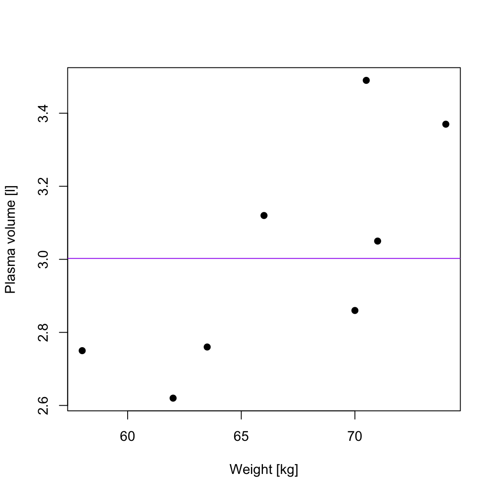
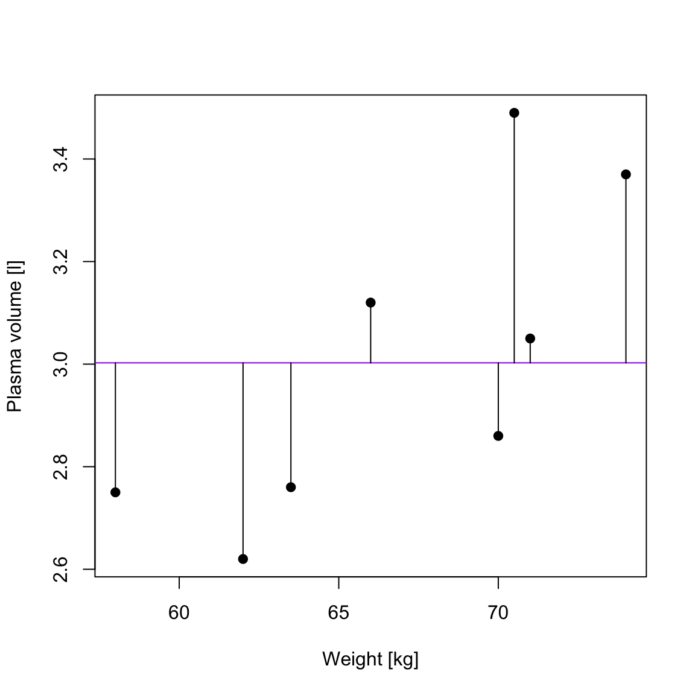
\(R^2\): summary of the fitted model
RSS

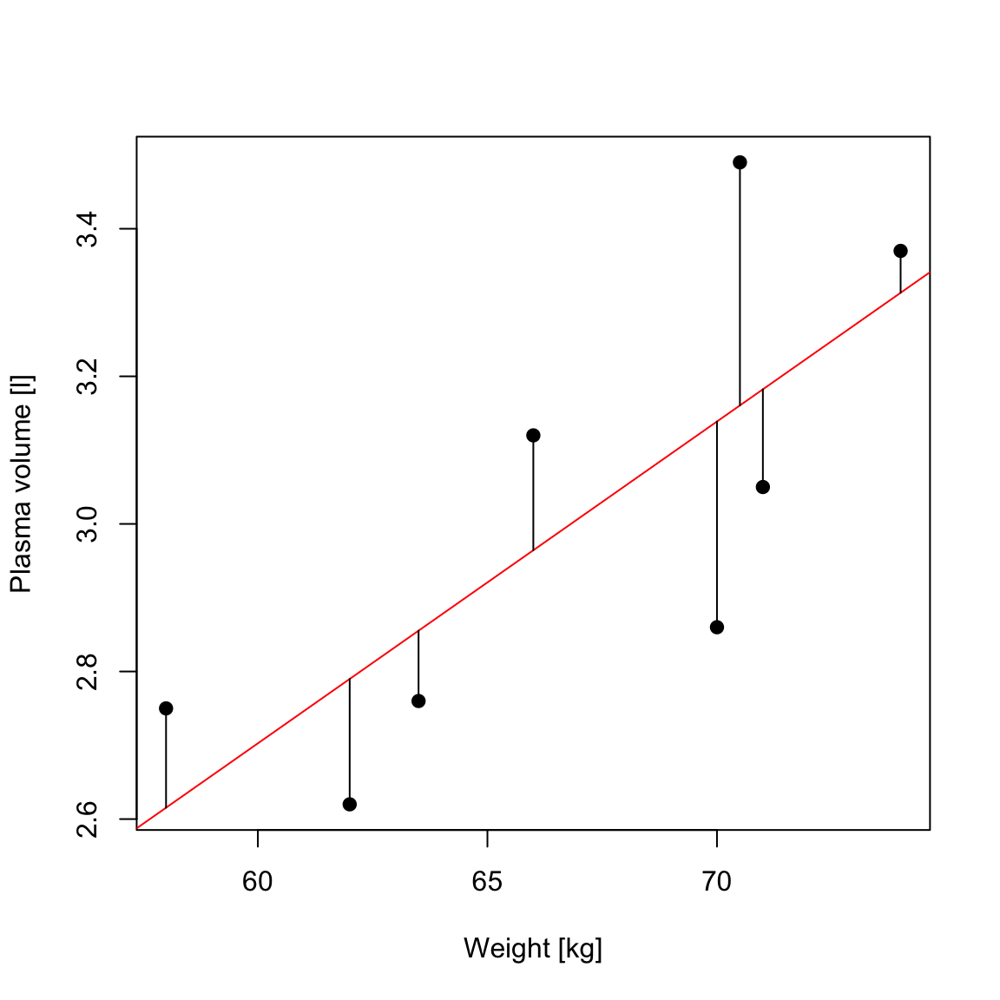
\(R^2\): summary of the fitted model

TSS, denoted Total corrected sum-of-squares is the residual sum-of-squares for Model 0 \[S(\hat{\beta_0}) = TSS = \sum_{i=1}^{n}(y_i - \bar{y})^2 = S_{yy}\] corresponding the to the sum of squared distances to the purple line
RSS, the residual sum-of-squares, is defined as: \[RSS = \displaystyle \sum_{i=1}^{n}(y_i - \{\hat{\beta_0} + \hat{\beta}_1x_{1i} + \dots + \hat{\beta}_px_{pi}\})^2 = \sum_{i=1}^{n}(y_i - \hat{y_i})^2\] and corresponds to the squared distances between the observed values \(y_i, \dots,y_n\) to fitted values \(\hat{y_1}, \dots \hat{y_n}\), i.e. distances to the red fitted line
\(R^2\): summary of the fitted model
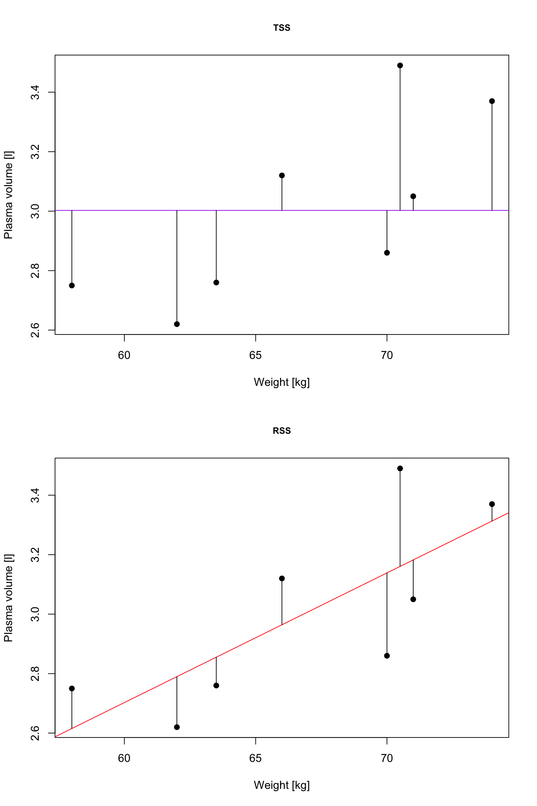
Definition 2 (\(R^2\)) A simple but useful measure of model fit is given by \[R^2 = 1 - \frac{RSS}{TSS}\] where:
- RSS is the residual sum-of-squares for Model 1, the fitted model of interest
- TSS is the sum of squares of the null model
- \(R^2\) is also referred as coefficient of determination
- \(R^2\) is expressed on a scale, as a proportion between 0 and 1 of the total variation in the data.
\(R^2\) and correlation coefficient
Theorem 2 (\(R^2\)) In the case of simple linear regression:
Model 1: \(Y_i = \beta_0 + \beta_1x + \epsilon_i\) \[R^2 = r^2\] where:
- \(R^2\) is the coefficient of determination
- \(r^2\) is the sample correlation coefficient
\(R^2(adj)\)
- In the case of multiple linear regression we are using the adjusted version of \(R^2\) to assess the model fit as the number of explanatory variables increase, \(R^2\) also increases.
Theorem 3 (\(R^2(adj)\)) For any multiple linear regression \[Y_i = \beta_0 + \beta_1x_{1i} + \dots + \beta_{p-1}x_{(p-1)i} + \epsilon_i\] \(R^2(adj)\) is defined as \[R^2(adj) = 1-\frac{\frac{RSS}{n-p-1}}{\frac{TSS}{n-1}}\]
- \(p\) is the number of independent predictors, i.e. the number of variables in the model, excluding the constant and \(n\) is number of observations.
\(R^2(adj)\) can also be calculated from \(R^2\): \[R^2(adj) = 1 - (1-R^2)\frac{n-1}{n-p-1}\]
Checking model assumptions
The assumptions of a linear model
- Before making use of a fitted model for explanation or prediction, it is wise to check that the model provides an adequate description of the data.
- Informally we have been using box plots and scatter plots to look at the data.
- There are however formal assumptions that should be met when fitting linear models.
The assumptions of a linear model
Linearity:
- The relationship between \(X\) and \(Y\) is linear
Independence of errors
- Errors from different observations are independent of each other
Normality of errors
- The residuals must be approximately normally distributed
Equal variances
- The variance of the residuals is the same for all values of \(X\)
Checking assumptions
Residuals, \(e_i = y_i - \hat{y}_i\) are the main ingredient to check model assumptions.
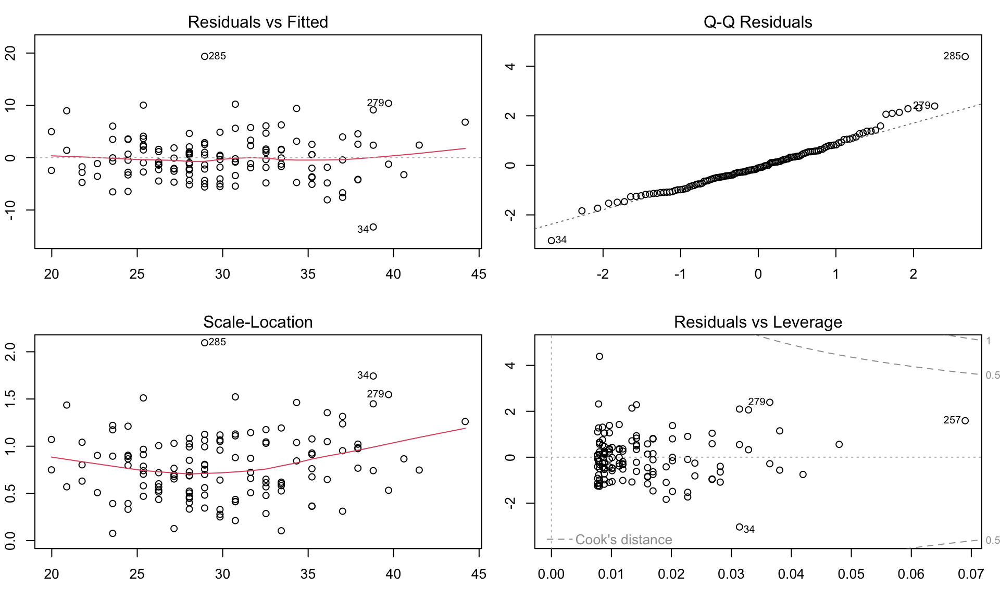
Checking assumptions
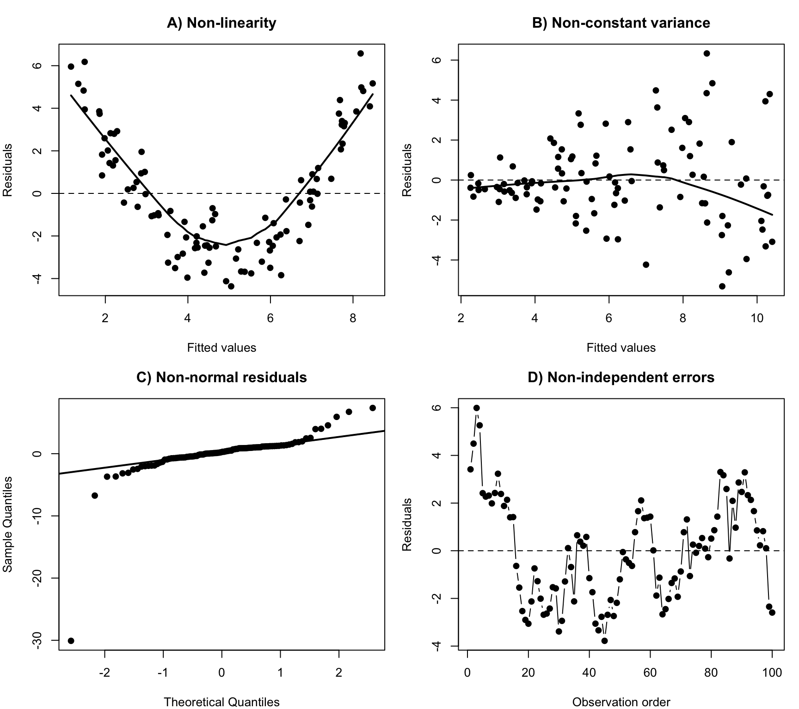
Figure 3: Examples of diagnostic patterns suggesting violations of linear model assumptions: A) non-linearity, B) non-constant variance, C) non-normal residuals, and D) dependence between observations.
Exercises
Let’s practice in exercises fitting linear models, hypothesis testing and assessing model fit.
Statistical Methods for Life Sciences